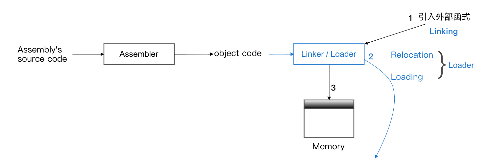
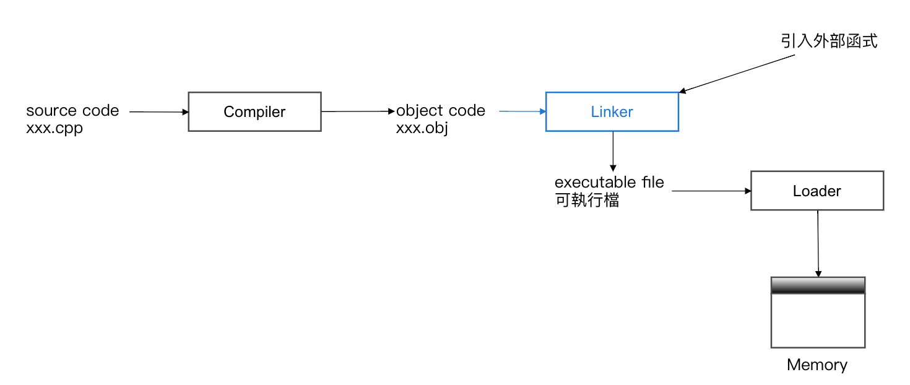
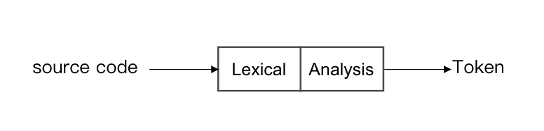
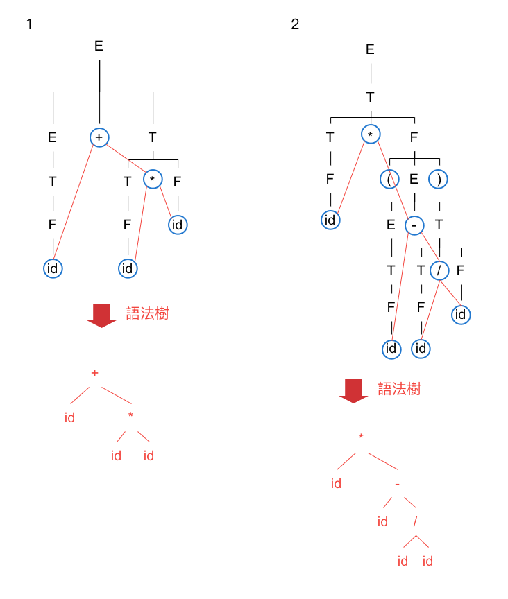
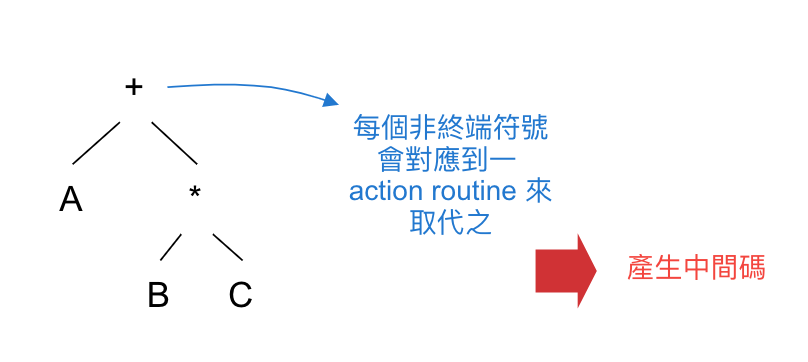
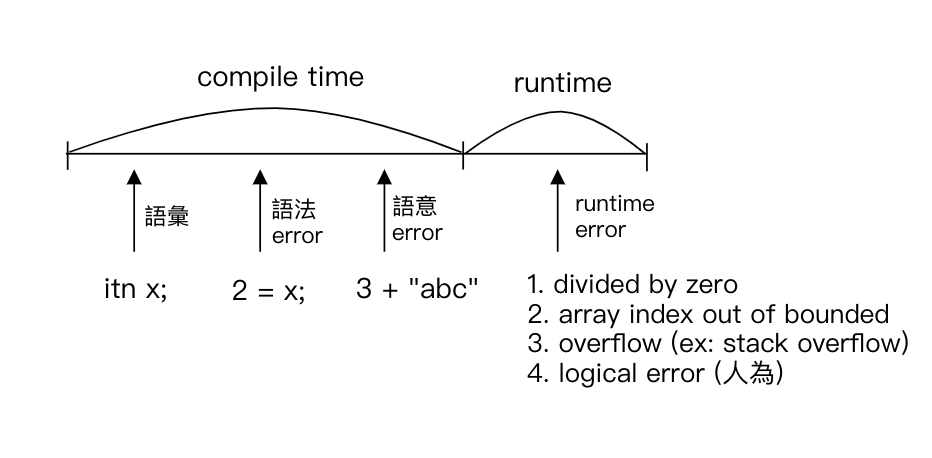
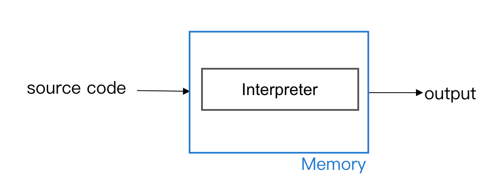
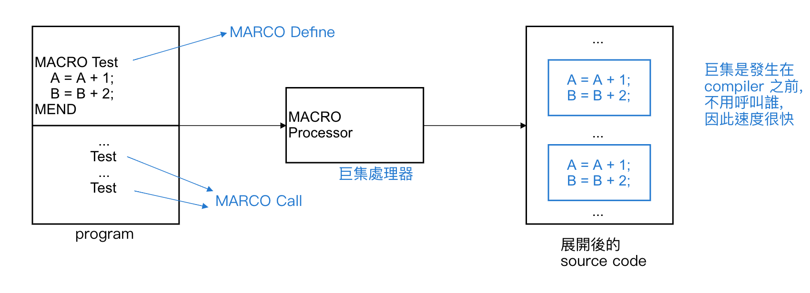
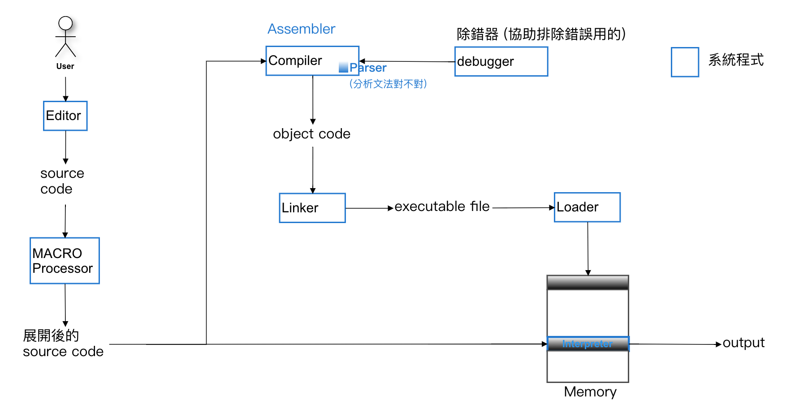

<!DOCTYPE html>
<html lang="zh-tw">
  <head>
    <meta charset="UTF-8">
<meta name="viewport"
      content="width=device-width, initial-scale=1.0, maximum-scale=1.0, minimum-scale=1.0">
<meta http-equiv="X-UA-Compatible" content="ie=edge">

    <meta name="author" content="pinjinwang">


<title>Chapter4-系統程式-part1 | PinJin&#39;s Blog</title>


    <link rel="icon" href="/repository/favicon.ico">


<style>
    @import url('https://fonts.googleapis.com/css2?family=Inter:wght@300;400;500;600;700&family=Noto+Sans+SC:wght@300;400;500;700&family=Roboto+Mono&display=swap');
</style>


    <!-- stylesheets list from _config.yml -->
    
    <link rel="stylesheet" href="/repository/css/style.css">
    


    <!-- scripts list from _config.yml -->
    
    <script src="/repository/js/frame.js"></script>
    


    <script src="https://polyfill.io/v3/polyfill.min.js?features=es6"></script>
    <script id="MathJax-script" async src="https://cdn.jsdelivr.net/npm/mathjax@3/es5/tex-mml-chtml.js"></script>


  <meta name="generator" content="Hexo 4.2.1"><link rel="alternate" href="/repository/atom.xml" title="PinJin's Blog" type="application/atom+xml">
</head>
  <body>
    <div class="mask-border">
    </div>

    <div class="wrapper">

      <div class="header">
  <div class="flex-container">
    <div class="header-inner">
      <div class="site-brand-container">
        <a href="/repository/">
          
            PinJin&#39;s Blog
          
        </a>
      </div>
      <div id="menu-btn" class="menu-btn" onclick="toggleMenu()">
        Menu
      </div>
      <nav class="site-nav">
        <ul class="menu-list">
          
            
              <li class="menu-item">
                <a href="/repository/">Home</a>
              </li> 
                   
          
            
              <li class="menu-item">
                <a href="/repository/about/">About</a>
              </li> 
                   
          
            
              <li class="menu-item">
                <a href="/repository/archives/">Blogs</a>
              </li> 
                   
          
            
              <li class="menu-item">
                <a href="/repository/tag/">Tag</a>
              </li> 
                   
          
          
            <li class="menu-item search-btn">
              <a href="#">Search</a>
            </li>
          
        </ul>
      </nav>
    </div>
  </div>
</div>


      <div class="main">
        <div class="flex-container">
          <article id="post">

  
    <div class="post-head">
    <div class="post-info">
        <div class="tag-list">
            
                
                    <span class="post-tag">
                        <a href="/repository/tags/System-Program/">
                            System Program
                        </a>
                    </span>    
                
                    <span class="post-tag">
                        <a href="/repository/tags/Software/">
                            Software
                        </a>
                    </span>    
                
                    <span class="post-tag">
                        <a href="/repository/tags/Assembler/">
                            Assembler
                        </a>
                    </span>    
                
                    <span class="post-tag">
                        <a href="/repository/tags/Linker-Loader/">
                            Linker/Loader
                        </a>
                    </span>    
                
                    <span class="post-tag">
                        <a href="/repository/tags/Compiler/">
                            Compiler
                        </a>
                    </span>    
                
                    <span class="post-tag">
                        <a href="/repository/tags/Interpreter/">
                            Interpreter
                        </a>
                    </span>    
                
                    <span class="post-tag">
                        <a href="/repository/tags/Marco/">
                            Marco
                        </a>
                    </span>    
                
                    <span class="post-tag">
                        <a href="/repository/tags/Subroutine/">
                            Subroutine
                        </a>
                    </span>    
                           
            
        </div>
        <div class="post-title">
            
            
                Chapter4-系統程式-part1
            
            
        </div>
        <span class="post-date">
            7月 2, 2021
        </span>
    </div>
    <div class="post-img">
        
            <div class="h-line-primary"></div>
              
    </div>
</div>
    <div class="post-content">
    <h1>4 系統程式 (System Program)</h1>
<hr>
<h2>Software License</h2>
<table>
<thead>
<tr>
<th>Software Licence</th>
<th>Def</th>
<th>licence</th>
<th>Open source code</th>
<th>Ex</th>
</tr>
</thead>
<tbody>
<tr>
<td><strong>Trial software</strong></td>
<td>試用一段時間, 若欲長期使用需付費</td>
<td>Yes</td>
<td>No</td>
<td>ACDSee</td>
</tr>
<tr>
<td><strong>Shareware</strong></td>
<td>同上, 但限制較寬鬆</td>
<td>Yes</td>
<td>No</td>
<td>WinRAR</td>
</tr>
<tr>
<td><strong>Freeware</strong></td>
<td>free</td>
<td>Yes</td>
<td>No</td>
<td>IE, MSN</td>
</tr>
<tr>
<td><strong>Public domain</strong></td>
<td>free</td>
<td>No</td>
<td>No</td>
<td>X</td>
</tr>
<tr>
<td><strong>Open software</strong></td>
<td>free</td>
<td>No</td>
<td>Yes</td>
<td>Redhat, Open Office</td>
</tr>
</tbody>
</table>
<h2>Open Source Software</h2>
<p>Def:</p>
<ul>
<li>指沒有 licence 限制, 可 free 使用, 且可拿到程式碼</li>
<li><strong>從 Open source 取得的程式, 修改後亦無 licence 所屬也為 Open source</strong></li>
</ul>
<h2>System Program</h2>
<h3><strong>Assembler (組譯器)</strong></h3>
<ul>
<li>Def: 將組合語言轉成 object code (<strong>目的碼, 為機器可識別之程式</strong>), 以便系統執行之</li>
<li>圖：</li>
</ul>
<h3><strong>Linker/Loader (鏈結器/載入器)</strong> =&gt; linking loader</h3>
<ul>
<li>欲將 object code 載入 memory 中, 過程需
<ol>
<li><strong>linking (連結)</strong>: 將 object code 中的外部參考之宣告, 正式跟外部函式庫鏈結</li>
<li><strong>relocation (重定址)</strong>: 將程式中參考位址依實際 memory 所在重新計算其實際的位址</li>
<li><strong>loading (載入)</strong>: 正式將上述完成之 object code 載入 memory 中</li>
</ol>
</li>
</ul>
<h3><strong>Compiler (編譯器)</strong></h3>
<ul>
<li>Def: 將高階語言 (c, c++) 轉成低階的 object code</li>
<li>圖：</li>
<li>Compiler 過程：
<ol>
<li>Lexical Analysis</li>
<li>Syntax Analysis</li>
<li>Semantic Analysis</li>
<li>Intermediate Code Optimization</li>
<li>Machine Dependent Code Generation and Optimization</li>
<li>Generate the Object Code<br>
1.~ 4. =&gt; <strong>Machine Independent</strong><br>
5.~ 6. =&gt; <strong>Machine Dependent</strong></li>
</ol>
</li>
<li>Lexical Analysis 語彙分析
<ul>
<li>Scan the program and find out the token (語彙單元)
<ol>
<li><strong>Terminal Symbol (終端符號)</strong> =&gt; keyword, 保留字</li>
<li><strong>Identifier (識別字)</strong> =&gt; 變數</li>
<li><strong>Liferal (常數)</strong> =&gt; 文, 數字</li>
</ol>
<ul>
<li>Ex: int(1) x(2) = (1) 20(3);(1)</li>
</ul>
</li>
<li>圖：</li>
</ul>
</li>
<li>Syntax Analysis 語法分析
<ul>
<li>Def: 判別程式敘述是否合乎文法 (Grammer)
<ul>
<li>合乎：建立出 <strong>parsing tree 或 syntax tree</strong></li>
<li>不合乎：output syntax tree</li>
</ul>
</li>
<li>圖：</li>
<li>文法 (Grammer)
<ul>
<li>Note: 剖析工具: parser (剖析器)</li>
<li>Def: <code>G = &lt;N, T, P, S&gt;</code>
<ul>
<li>N: Non-terminal symbol set (非終端)</li>
<li>T: Terminal symbol set (終端)</li>
<li>P: Production rules (推衍規則)</li>
<li>S: Start symbol (S ∈ N) (起始)</li>
</ul>
</li>
<li>Ex:<br>
<code>G = &lt;N, T, P, S&gt;</code>, <code>N = {s, A, B}</code>, <code>T = {a, b}</code>,<br>
<code>P = {S -&gt; A|B; A -&gt; aA|a; B -&gt; bB|b;}</code> (-&gt; 為推衍符號),<br>
<code>S = s ∈ N</code> (S 為起始符號, s 為起始符號的名稱), 問 abaa, aaa 是否合乎文法？<br>
<strong>Sol:</strong>
<ol>
<li>S -&gt; A -&gt; aA -&gt; 此無法推出 b, 故不合乎文法</li>
<li>S -&gt; A -&gt; aA -&gt; aaA -&gt; aaa, 可推論出, 故合乎文法</li>
</ol>
</li>
</ul>
</li>
<li>Parsing tree 剖析樹
<ul>
<li>Def: 剖析文法敘述所建立之樹</li>
<li>作法:
<ul>
<li>N 必為 Tree 中的非終端節點 (degree ≥ 1)</li>
<li>T 必為 Tree 中的終端節點 (degree = 0)</li>
</ul>
</li>
<li>Ex:<br>
<code>G = &lt;N, T, P, S&gt;</code>, <code>N = {E, T, F}</code>, <code>T = {+, -, *, /, id (,)}</code>,<br>
<code>P = {E -&gt; E+T|E-T|T; T -&gt; T*F|T/F|F; F -&gt; id|(E);}</code>, <code>S = E ∈ N</code>,<br>
問
<ol>
<li>id + id * id 合法建立剖析樹</li>
<li>id * (id - id / id)?</li>
</ol>
<ul>
<li>Note: 括號 &quot;()&quot;, 不可以被分割於 2 不同區塊之中
<strong>Sol:</strong><br>
</li>
</ul>
</li>
</ul>
</li>
<li>Syntax tree 語法樹
<ul>
<li>目的：
<ul>
<li>簡化剖析樹</li>
<li>只保留 Terminal symbol</li>
<li>利用中序追蹤可還原運算式</li>
</ul>
</li>
<li>Note: <strong>括號不需考慮</strong> (因為已有 priority 之考量)</li>
</ul>
</li>
<li>文法種類
<table>
<thead>
<tr>
<th>Note</th>
<th>Type</th>
<th>別名</th>
<th>自動機</th>
</tr>
</thead>
<tbody>
<tr>
<td><strong>自由度最大</strong></td>
<td>0</td>
<td>Unrestricted (不受限) grammer (AI)</td>
<td>Turing Machine (杜林機)</td>
</tr>
<tr>
<td><strong>如變數的宣告</strong></td>
<td>1</td>
<td>Context-sensitive (上下文相關) grammer</td>
<td></td>
</tr>
<tr>
<td><strong>高階語法</strong></td>
<td>2</td>
<td>Context-free (上下文無關) grammer</td>
<td></td>
</tr>
<tr>
<td></td>
<td>3</td>
<td>Regular grammer</td>
<td></td>
</tr>
</tbody>
</table>
</li>
</ul>
</li>
<li>Semantic Analysis 語意分析
<ul>
<li>目的：依剖析結果, 呼叫對應的 semantic routine 或 action routine 以產生 <strong>intermediate code (中間碼)</strong> (<strong>類似目的碼一樣由 0, 1 組成, 但和機器獨立謂之</strong>)</li>
<li>圖：</li>
</ul>
</li>
<li>Intermediate Code Optimization 中間碼最佳化
<ul>
<li>目的：
<ol>
<li>精簡中間碼</li>
<li>所佔用 space 下降</li>
<li>效益提高</li>
</ol>
</li>
<li>常用技巧：
<ol>
<li>刪除共通運算式<br>
<code>A = B + C * D + 2</code><br>
<code>F = 5 + (B + C + D) / 3</code><br>
令 B, C, D 皆不變<br>
α = B + C * D</li>
<li>先求出常數運算<br>
Ex: <code>A = 3.14 * 2.56 / 3.2 + 8 - E</code><br>
求 α = 3.14 * 2.56 / 3.2 + 8</li>
<li>布林運算式最佳化
<ul>
<li>Ex1: if (A and B), A B 皆為 Condition (條件式)<br>
若 A = false, B 不做 =&gt; 結果必為 false</li>
<li>Ex2: if (A or B), 若 A = true, B 不做 =&gt; 結果必為 True</li>
<li>Note: 此概念為：
<ul>
<li>短路：short-circuit</li>
<li>又稱 <strong>&quot;捷徑運算&quot;</strong></li>
</ul>
</li>
</ul>
</li>
</ol>
</li>
</ul>
</li>
<li>程式中常見的 error<br>
</li>
</ul>
<h3><strong>Interpreter (直譯器)</strong></h3>
<ul>
<li>Def:
<ul>
<li>不事先將 source code 轉成 object code</li>
<li>直接拿 source code 執行, 依原始程式 logical 順序進行</li>
<li>執行期間 interpreter 須留在 memory 之中</li>
</ul>
</li>
<li>圖：</li>
</ul>
<h3>Compare Compiler vs Interpreter</h3>
<table>
<thead>
<tr>
<th>Compiler</th>
<th>Interpreter</th>
</tr>
</thead>
<tbody>
<tr>
<td>執行不需於 memory 中</td>
<td>需要</td>
</tr>
<tr>
<td>會事先產生 object code (<strong>有最佳化, 故效益佳</strong>)</td>
<td>不會, 直接依 logical 執行, 產生結果</td>
</tr>
<tr>
<td>全部 scan, 故比較沒有漏洞</td>
<td>較易有漏洞</td>
</tr>
<tr>
<td>修改 =&gt; recompile (彈性差)</td>
<td>不需 recompile (彈性佳)</td>
</tr>
<tr>
<td>開發時期較不適用</td>
<td>適用</td>
</tr>
<tr>
<td>找 bug 較不易</td>
<td>較易找到 bug 所在</td>
</tr>
<tr>
<td>初學者較不易</td>
<td>初學者較易上手</td>
</tr>
</tbody>
</table>
<hr>
<h3>Macro 巨集</h3>
<ul>
<li>Def: 開放式副程式 (Open subroutine)<br>
將一連串的指令定義為巨集指令, 當 source code 轉換時, 遇到巨集呼叫, 就將對應的連串指令插入於呼叫處</li>
<li>圖：</li>
<li>特性：
<ol>
<li>巨集呼叫於<strong>程式轉換</strong>期間, 而非 <strong>runtime</strong></li>
<li>呼叫 Ｎ 次, 需插入巨集本文 N 次 =&gt; <strong>浪費空間</strong></li>
<li>執行階段, 不需做控制移轉 =&gt; <strong>快</strong></li>
<li>多此使用一單獨定義的常式 (定義一次, 可使用多次)</li>
</ol>
</li>
</ul>
<h3>Subroutine 副程式 =&gt; 又稱 close subroutine</h3>
<ul>
<li>Def: 於<strong>執行中</strong>, 當 subroutine 被呼叫才<strong>動態</strong>的去呼叫之, 並將資料及控制權移轉給他, 待完成, 再移轉回來</li>
<li>優點：只佔用一份 memory =&gt; 省 space</li>
<li>缺點：需做控制權移轉 =&gt; speed 下降</li>
</ul>
<h3>Compare Macro vs Subroutine</h3>
<table>
<thead>
<tr>
<th>MACRO</th>
<th>Subroutine</th>
</tr>
</thead>
<tbody>
<tr>
<td>Speed 快</td>
<td>Speed 慢</td>
</tr>
<tr>
<td>以空間換時間</td>
<td>以時間換空間</td>
</tr>
<tr>
<td>space 浪費</td>
<td>space 省</td>
</tr>
</tbody>
</table>
<h2>Summary</h2>
<p></p>

</div> 

<script>
    window.onload = detectors();
</script>
    <div class="post-footer">
    <div class="h-line-primary"></div>
    <nav class="post-nav">
        <div class="prev-item">
           
                <div class="icon arrow-left"></div>
                <div class="post-link">
                    <a href="/repository/2021/07/02/Chapter4-%E7%B3%BB%E7%B5%B1%E7%A8%8B%E5%BC%8F-part2/">Prev</a>
                </div>
            
        </div>
        <div class="next-item">
            
                <div class="icon arrow-right"></div>
                <div class="post-link">
                  <a href="/repository/2021/07/02/Chapter3-%E4%BD%9C%E6%A5%AD%E7%B3%BB%E7%B5%B1-%E7%A3%81%E7%A2%9F%E7%AE%A1%E7%90%86-part3/">Next</a>  
                </div>  
            
        </div>
    </nav>
</div>

    
      <div class="post-comment">

     

     
    
    

</div>
     
  
</article>
        </div>
      </div>
      
      <div class="footer">
    <div class="flex-container">
        <div class="footer-text">
            
            
                © 2019-2023 PinJin Wang | 
            
                
        </div>
    </div>
</div>

    </div>

    
      <div class="search-popup">
    <div class="search-popup-overlay">  
    </div>
    <div class="search-popup-window" >
        <div class="search-header">
            <div class="search-input-container">
              <input autocomplete="off" autocapitalize="off" maxlength="80"
                     placeholder="Search Anything" spellcheck="false"
                     type="search" class="search-input">
            </div>
            <div class="search-close-btn">
                <div class="icon close-btn"></div>
            </div>
        </div>
        <div class="search-result-container">
        </div>
    </div>
</div>

<script>
    const searchConfig = {
        path             : "/repository/search.xml",
        top_n_per_article: "1",
        unescape         : "false",
        trigger: "auto",
        preload: "false"
    }
</script>
<script src="https://cdn.jsdelivr.net/npm/hexo-generator-searchdb@1.4.0/dist/search.js"></script>
<script src="/js/search.js"></script>
    
    

  </body>
</html>
